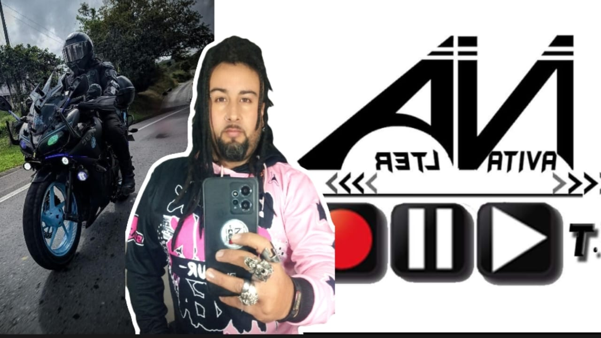

NUESTROS ENFOQUES
Periodismo especializado con visión territorial
Periodismo con Identidad

Periodismo especializado con visión territorial
Periodismo independiente respaldado por marcas que creen en el territorio
Auditoría de tráfico garantizada para pautantes y aliados